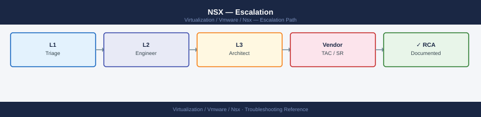

NSX — Escalation¶

Before you begin¶
- Access required: SSH to each NSX Manager node; NSX Manager API access (admin credentials); Broadcom support account with entitlement to NSX
- Do this first: collect all data below before changing anything. Broadcom will ask for the support bundle in their first response
- Do NOT change DFW rules while the issue is open — adding or removing rules changes the enforcement state and makes diagnosis harder
- Do NOT restart NSX Manager unless Broadcom instructs you to. Restarting a Manager node in a DEGRADED cluster can cause split-brain
Pre-Escalation Self-Check¶
Run these before opening the SR. Many NSX issues are resolvable without Broadcom.
| Check | What to do | Expected result |
|---|---|---|
| Manager cluster health | NSX Manager UI → System → Overview | All nodes show green |
| Manager cluster API | curl -sk -u admin:<pw> https://<mgr>/api/v1/cluster/status |
"control_cluster_status": "STABLE" |
| Transport nodes | NSX Manager UI → Fabric → Nodes → Transport Nodes | All nodes Connected |
| TEP reachability | SSH to ESXi: vmkping -I vmk10 <remote-tep-ip> -d -s 1500 |
Replies received; increase to 8972 for jumbo |
| BGP sessions | SSH to Edge: get bgp neighbor summary |
All peers in Established state |
| Alarms | NSX Manager UI → Alarms → Active | Note all CRITICAL alarms |
| NSX-vCenter sync | NSX Manager UI → System → vCenter → Registration status | Status: Connected |
| NSX version | get version from Manager CLI or API /api/v1/node/version |
Matches your change record |
Step-by-Step Data Collection¶
Run all of these before opening the SR.
1. Get the NSX version and build number¶
# SSH to any NSX Manager node
ssh admin@<nsx-manager>
# Get version via CLI
get version
# Or via API
curl -sk -u admin:<password> https://<nsx-manager>/api/v1/node/version
# Note: include build number in the SR, not just the release version
admin@nsx-manager-01.lab.local's password:
NSX Manager> get version
Product: NSX
Version: 3.2.1.0
Build: 21150547
Release Date: 2024-01-15
NSX Manager> exit
Connection to nsx-manager-01.lab.local closed.
$ curl -sk -u admin:MyP@ssw0rd https://nsx-manager-01.lab.local/api/v1/node/version
{
"product_name": "NSX",
"product_version": "3.2.1.0",
"build_number": "21150547",
"release_date": "2024-01-15T00:00:00Z",
"node_id": "a7f2c9e1-4b6d-11ee-b56e-005056a1e2c4"
}
Common errors
Permission denied (publickey,password). — Verify the admin account credentials and ensure SSH is enabled on the NSX Manager node.
curl: (60) SSL certificate problem: self signed certificate — Remove the -k flag if using a trusted certificate, or ensure the NSX Manager hostname matches the certificate CN.
NSX Manager> get version: command not found — Exit the NSX CLI shell first with exit, then use the API call instead, or verify you are connected to an NSX Manager node (not a controller).
2. Capture the Manager cluster status¶
# Full cluster status — paste this into the SR description
curl -sk -u admin:<password> https://<nsx-manager>/api/v1/cluster/status | python3 -m json.tool
# Control and management cluster nodes
curl -sk -u admin:<password> https://<nsx-manager>/api/v1/cluster/nodes | python3 -m json.tool
# Transport node status — shows all hosts and edges
curl -sk -u admin:<password> "https://<nsx-manager>/api/v1/transport-nodes/status?status=DOWN" | python3 -m json.tool
# Active alarms
curl -sk -u admin:<password> "https://<nsx-manager>/api/v1/alarms?status=OPEN&severity=CRITICAL" | python3 -m json.tool
{
"cluster_status": "STABLE",
"cluster_id": "550e8400-e29b-41d4-a716-446655440000",
"node_count": 3,
"control_cluster_status": "STABLE",
"mgmt_cluster_status": "STABLE",
"last_updated": "2024-01-15T14:32:18.445Z"
}
{
"result_count": 3,
"results": [
{
"id": "550e8400-e29b-41d4-a716-446655440001",
"fqdn": "nsx-mgr-01.lab.local",
"ip_address": "192.168.1.10",
"status": "UP",
"role": "MANAGER",
"version": "3.2.1.0.0.20456789"
},
{
"id": "550e8400-e29b-41d4-a716-446655440002",
"fqdn": "nsx-mgr-02.lab.local",
"ip_address": "192.168.1.11",
"status": "UP",
"role": "CONTROL_MANAGER",
"version": "3.2.1.0.0.20456789"
},
{
"id": "550e8400-e29b-41d4-a716-446655440003",
"fqdn": "nsx-mgr-03.lab.local",
"ip_address": "192.168.1.12",
"status": "UP",
"role": "CONTROL_MANAGER",
"version": "3.2.1.0.0.20456789"
}
]
}
{
"result_count": 2,
"results": [
{
"transport_node_id": "tn-edge-01",
"display_name": "edge-01.lab.local",
"status": "DOWN",
"status_detail": "Connection lost",
"last_heartbeat": "2024-01-15T13:45:22.000Z"
},
{
"transport_node_id": "tn-host-07",
"display_name": "esx-host-07.lab.local",
"status": "DOWN",
"status_detail": "Agent timeout",
"last_heartbeat": "2024-01-15T12:18:55.000Z"
}
]
}
{
"result_count": 1,
"results": [
{
"id": "alarm-550e8400-e29b-41d4-a716-446655440099",
"title": "Control Cluster Node Disconnected",
"severity": "CRITICAL",
"status": "OPEN",
"entity_id": "550e8400-e29b-41d4-a716-446655440002",
"created_time": "2024-01-15T14:15:33.000Z",
"description": "Control cluster node nsx-mgr-02 is
3. Generate the NSX support bundle (takes 10–30 minutes)¶
# Trigger support bundle generation via API
curl -sk -u admin:<password> \
-X POST \
-H "Content-Type: application/json" \
-d '{"log_age": 48, "components": ["MANAGER", "CONTROLLER", "EDGE", "HOST"]}' \
"https://<nsx-manager>/api/v1/node/support-bundles"
# Note the bundle ID returned in the response
# Poll for completion — repeat until status shows "SUCCESS"
curl -sk -u admin:<password> \
"https://<nsx-manager>/api/v1/node/support-bundles/status"
# Download the bundle (URL provided in the status response)
curl -sk -u admin:<password> \
-O "https://<nsx-manager>/api/v1/node/support-bundles/download/<bundle-id>"
{
"bundle_id": "support-bundle-20240115-143052-a7f2c9e1",
"status": "IN_PROGRESS",
"progress": 0,
"timestamp": "2024-01-15T14:30:52.000Z"
}
{
"bundle_id": "support-bundle-20240115-143052-a7f2c9e1",
"status": "IN_PROGRESS",
"progress": 45,
"timestamp": "2024-01-15T14:30:52.000Z"
}
{
"bundle_id": "support-bundle-20240115-143052-a7f2c9e1",
"status": "SUCCESS",
"progress": 100,
"file_size": 524288000,
"download_url": "/api/v1/node/support-bundles/download/support-bundle-20240115-143052-a7f2c9e1",
"timestamp": "2024-01-15T14:35:18.000Z"
}
% Total % Received % Xferd Average Speed Time Time Time Current
Dload Upload Total Spent Left Speed
100 500M 100 500M 0 0 45.2M 0 0:00:11 0:00:11 --:--:-- support-bundle-20240115-143052-a7f2c9e1.tar.gz
Common errors
curl: (60) SSL certificate problem: self signed certificate — Add -k flag to skip SSL verification (already included in the example, but ensure it's present if you remove it).
{"error":"Invalid credentials","status":401} — Verify the NSX Manager admin password is correct and URL is reachable with ping <nsx-manager>.
{"error":"Bundle generation failed","status":"FAILED","reason":"Insufficient disk space"} — Free up disk space on the NSX Manager node or reduce log_age parameter to collect fewer days of logs.
4. Run Traceflow (for traffic drop or DFW issues)¶
In NSX Manager UI:
- Go to Plan & Troubleshoot → Traceflow.
- Fill in source VM, destination IP, protocol, and port.
- Click Trace. Wait for results.
- Click Export to download the trace as a JSON or PDF file. Attach this to the SR.
Include in the SR description: source VM, destination, the rule or component that dropped the packet, and what you expected to happen.
5. Write the timeline¶
NSX version: 4.1.2 build 23182604
Manager nodes: nsx-mgr-01, nsx-mgr-02, nsx-mgr-03
vCenter: vcenter-01 (8.0 U2)
Issue first observed: 2026-06-14 14:30 UTC
Last known good state: 2026-06-14 09:00 UTC
Changes in the 24h before the issue:
- 09:00: NSX 4.1.1 → 4.1.2 upgrade initiated via LCM
- 14:25: Upgrade task showed FAILED on Edge cluster upgrade
- 14:30: DFW drops reported on 3 workload VMs
Steps already taken:
- Verified Manager cluster status: STABLE (Managers OK, Edges failed)
- Ran Traceflow: packet dropped at DFW rule ID 1234 on host esxi-prod-02
- Did NOT retry the upgrade or modify DFW rules
Blast radius: 3 VMs in tenant-A segment can no longer reach database segment
How to Open the SR on Broadcom Support Portal¶
-
Go to support.broadcom.com and sign in. If you do not have an account: click Register and use your company email — entitlement is linked to your Broadcom contract.
-
Click Open a New Case in the top navigation.
-
Under Select Product Family, choose VMware NSX.
-
Under Product Version, select your exact NSX version from the drop-down.
-
Under Request Type, select Technical.
-
Under Severity, select:
- S1 — Critical: NSX Manager cluster DEGRADED and you cannot manage networking; DFW drops all production traffic; network is completely down with no workaround
- S2 — Major: A key NSX workflow is failing (upgrade, Edge deployment) but existing VMs retain network connectivity; you have a partial workaround
- S3 — Minor: Single tenant segment affected; non-critical feature degraded; network remains functional for most VMs
-
S4 — General: How-to, pre-check, or non-urgent configuration question
-
In the Summary field, write one sentence: product + symptom + scope. Example:
NSX 4.1.2 — Edge cluster upgrade failed at 14:25 UTC, DFW dropping traffic for 3 VMs in tenant-A segment. -
In the Description field, paste:
- NSX version and build number
- Manager cluster status API output
- The timeline from Step 5
- Traceflow export result (summarise what was dropped and where)
- Active CRITICAL alarms list
-
What you have already tried
-
Under Attachments, upload:
- The NSX support bundle from Step 3
- The Traceflow export from Step 4
-
Any screenshots of NSX Manager alarms or cluster status
-
Click Submit. You will receive a case number by email immediately.
-
S1 only: the case confirmation page shows a regional phone number. Call it immediately and state "Severity 1 — NSX network is down" at the start of the call.
Escalation Path¶
Step 1 — Open case at support.broadcom.com with NSX support bundle attached
↓
Step 2 — T1 support acknowledges and confirms bundle received (typically 30 min–4 hr)
↓
Step 3 — If no meaningful progress in 4 hours for S1 or 1 business day for S2:
→ Reply in the case: "Requesting T2 NSX Senior Engineer assignment"
→ State: "Impact: [X] VMs offline / Manager DEGRADED / upgrade failed"
↓
Step 4 — T2 NSX SE is assigned; they will schedule a live Zoom/Webex session
→ Have SSH access to NSX Manager and Edge nodes ready for the call
→ Have vSphere Client and NSX Manager UI open
↓
Step 5 — If T2 cannot resolve and issue requires code-level investigation:
→ T2 escalates to T3 (NSX engineering) — you do not need to initiate this
↓
Step 6 — For complete network outage, data loss risk, or 24h+ with no resolution:
→ Request a Critical Situation (CritSit) engagement
→ Add to case: "Requesting CritSit — [reason: network down / 24h no progress]"
→ CritSit brings dedicated team lead + exec visibility
What NOT to Do¶
| Do NOT do this | Why | What to do instead |
|---|---|---|
| Restart NSX Manager service | Can cause split-brain in the Manager cluster if nodes are mid-sync | Only restart if explicitly instructed by Broadcom GSS |
| Reboot Edge nodes | Causes BGP session drops and traffic loss across all tenants using that Edge | Have GSS assess which Edge is safe to reboot first |
| Add or delete DFW rules mid-incident | Changes enforcement state; makes Traceflow results unreliable | Freeze all firewall policy changes until resolution |
| Retry a failed NSX upgrade | Can leave Managers and Edges at mixed versions; harder to recover | Wait for GSS to confirm the upgrade is safe to retry |
| Delete and re-add a Transport Node | Loses all TEP and host prep configuration | Document the node state and escalate |
| Resolve alarms manually without root cause | Masking the alarm does not fix the underlying issue | Leave alarms active for GSS to use in diagnosis |
Useful Commands for Case Updates¶
Paste these into case replies to show Broadcom the current state.
# NSX Manager CLI (SSH to any Manager node: ssh admin@<mgr>)
nsxcli
get cluster status
get managers
get services
get corfu-cluster status
# Transport node and tunnel status
get transport-node-status
get tunnel status
# Edge node CLI (SSH to each Edge: ssh admin@<edge-ip>)
get version
get services
get bgp neighbor summary
get edge-cluster status
get interfaces
# From NSX Manager API (curl from management workstation)
# Manager cluster
curl -sk -u admin:<pw> https://<mgr>/api/v1/cluster/status | python3 -m json.tool
# Transport nodes in DOWN state
curl -sk -u admin:<pw> "https://<mgr>/api/v1/transport-nodes/status?status=DOWN" | python3 -m json.tool
# All active alarms
curl -sk -u admin:<pw> "https://<mgr>/api/v1/alarms?status=OPEN" | python3 -m json.tool
# Logical router status (for BGP/routing issues)
curl -sk -u admin:<pw> "https://<mgr>/api/v1/logical-routers" | python3 -m json.tool
Expected outputnsx-manager-01> nsxcli
nsx-manager-01# get cluster status
Cluster Status: STABLE
Node ID: 42a7c8d1-9f2e-4b6c-a1e3-7d5f9c2b8e4a
Node IP: 192.168.1.10
Node Status: UP
Cluster Node Count: 3
nsx-manager-01# get managers
Manager Nodes:
192.168.1.10 nsx-manager-01 UP
192.168.1.11 nsx-manager-02 UP
192.168.1.12 nsx-manager-03 UP
nsx-manager-01# get services
Service Name Status PID
nsx-manager UP 4521
policy-service UP 5847
cluster-service UP 3294
corfu-service UP 2156
messaging-service UP 6123
nsx-manager-01# get corfu-cluster status
Corfu Cluster Status: READY
Cluster Size: 3
Layout Epoch: 127
nsx-manager-01# get transport-node-status
Transport Node Status Summary:
UP: 24
DOWN: 1
DEGRADED: 0
nsx-manager-01# get tunnel status
Tunnel Status Summary:
UP: 156
DOWN: 3
UNKNOWN: 0
edge-01> get version
NSX Edge Version: 3.2.1.0
Build: 18414822
Release Date: 2023-11-15
edge-01> get services
Service Name Status PID
nsx-edge UP 7234
datapath UP 8156
bgp-service UP 5421
edge-01> get bgp neighbor summary
Neighbor Address AS State Uptime
10.0.0.1 65001 Established 14d 5h 23m
10.0.0.2 65001 Established 8d 12h 44m
10.0.0.3 65002 Connect 0h 2m 15s
edge-01> get edge-cluster status
Edge Cluster: edge-cluster-01
Status: ACTIVE
Member Count: 2
Active Members: 2
edge-01> get interfaces
Interface Name IP Address Status MTU
eth0 10.20.30.41/24 UP 1500
eth1 10.20.30.42/24 UP 1500
eth2 10.20.30.43/24 UP 1500
{
"cluster_status": "STABLE",
"node_count": 3,
"online_nodes": 3,
"offline_nodes": 0,
"degraded_nodes": 0
}
{
"results": [
{
"transport_node_id": "tn-456",
"display_name": "esx-host-07",
"status": "DOWN",
"last_heartbeat_timestamp": 1699564821000
}
],
"result_count": 1
}
{
"results": [
{
"id": "alarm-789",
"title": "Transport Node Connectivity Lost",
¶
nsx-manager-01> nsxcli
nsx-manager-01# get cluster status
Cluster Status: STABLE
Node ID: 42a7c8d1-9f2e-4b6c-a1e3-7d5f9c2b8e4a
Node IP: 192.168.1.10
Node Status: UP
Cluster Node Count: 3
nsx-manager-01# get managers
Manager Nodes:
192.168.1.10 nsx-manager-01 UP
192.168.1.11 nsx-manager-02 UP
192.168.1.12 nsx-manager-03 UP
nsx-manager-01# get services
Service Name Status PID
nsx-manager UP 4521
policy-service UP 5847
cluster-service UP 3294
corfu-service UP 2156
messaging-service UP 6123
nsx-manager-01# get corfu-cluster status
Corfu Cluster Status: READY
Cluster Size: 3
Layout Epoch: 127
nsx-manager-01# get transport-node-status
Transport Node Status Summary:
UP: 24
DOWN: 1
DEGRADED: 0
nsx-manager-01# get tunnel status
Tunnel Status Summary:
UP: 156
DOWN: 3
UNKNOWN: 0
edge-01> get version
NSX Edge Version: 3.2.1.0
Build: 18414822
Release Date: 2023-11-15
edge-01> get services
Service Name Status PID
nsx-edge UP 7234
datapath UP 8156
bgp-service UP 5421
edge-01> get bgp neighbor summary
Neighbor Address AS State Uptime
10.0.0.1 65001 Established 14d 5h 23m
10.0.0.2 65001 Established 8d 12h 44m
10.0.0.3 65002 Connect 0h 2m 15s
edge-01> get edge-cluster status
Edge Cluster: edge-cluster-01
Status: ACTIVE
Member Count: 2
Active Members: 2
edge-01> get interfaces
Interface Name IP Address Status MTU
eth0 10.20.30.41/24 UP 1500
eth1 10.20.30.42/24 UP 1500
eth2 10.20.30.43/24 UP 1500
{
"cluster_status": "STABLE",
"node_count": 3,
"online_nodes": 3,
"offline_nodes": 0,
"degraded_nodes": 0
}
{
"results": [
{
"transport_node_id": "tn-456",
"display_name": "esx-host-07",
"status": "DOWN",
"last_heartbeat_timestamp": 1699564821000
}
],
"result_count": 1
}
{
"results": [
{
"id": "alarm-789",
"title": "Transport Node Connectivity Lost",
Support Portal and SLA Reference¶
| Severity | Definition | Initial Response SLA |
|---|---|---|
| S1 — Critical | Network down; Manager DEGRADED; data at risk; no workaround | 30 minutes (24×7) |
| S2 — Major | Upgrade failed; key feature broken; VMs still connected | 4 hours |
| S3 — Minor | Single segment issue; non-critical feature degraded | 1 business day |
| S4 — General | How-to, pre-check, documentation question | 2 business days |
See also¶
Verify resolution¶
- NSX Manager UI → System → Overview shows all Manager nodes green and cluster status STABLE
- All Transport Nodes show Connected in Fabric → Nodes
- Run Traceflow for the same source/destination that was failing — confirm packet reaches destination
- BGP sessions restored: SSH to Edge →
get bgp neighbor summary→ all peers Established - Run
curl -sk -u admin:<pw> https://<mgr>/api/v1/alarms?status=OPEN&severity=CRITICALand confirm zero active critical alarms - Monitor NSX Manager Alarms page for 15 minutes and confirm no new alerts